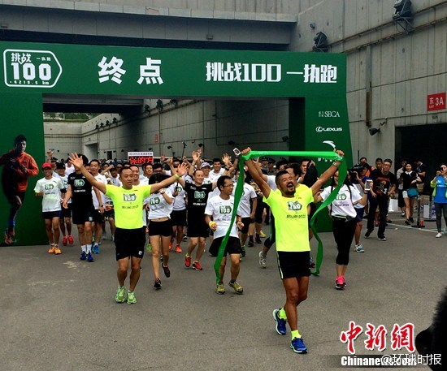

膝盖还好吧？@环球时报:【100天跑完100场马拉松！他做到了！】100天来，这段4219.54公里的征程跨越9省32市；100天里，陈盆滨遭遇恶劣天气、克服伤病、收获友谊、传递申奥祝福……今天上午，陈盆滨完成了一百天跑完一百个马拉松的壮举。“我最大的梦想，就是可以带动更多人跑起来”。陈盆滨百日百马挑战成功：希望带动更多人跑起来中新网 

 】100天来，这段4219.54公里的征程跨越9省32市；100天里，陈盆滨遭遇恶劣天气、克服伤病、收获友谊、传递申奥祝福……今天上午，陈盆滨完成了一百天跑完一百个马拉松的壮举。“我最大的梦想，就是可以带动更多人跑起来”。
】100天来，这段4219.54公里的征程跨越9省32市；100天里，陈盆滨遭遇恶劣天气、克服伤病、收获友谊、传递申奥祝福……今天上午，陈盆滨完成了一百天跑完一百个马拉松的壮举。“我最大的梦想，就是可以带动更多人跑起来”。 陈盆滨百日百马挑战成功：希望带动更多人跑起来中新网
陈盆滨百日百马挑战成功：希望带动更多人跑起来中新网